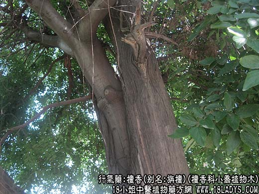
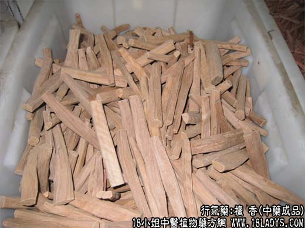

【中药概述】
檀香，别名：旃檀、白檀、檀香木、真檀，为檀香科小乔植物木檀香的木材。辛、温。归脾、胃、肺经。
1．温中和胃：用于气滞所致的胸腹疼痛，尤对寒凝气滞的胃痛，脘腹冷痛、甚至呕吐更为适宜，如<匀气散>。
2．理气止痛：用于气滞血瘀所致的胸痛、心绞痛等症，可与丹参，砂仁或配细辛，延胡索等同用。
【药物形态】
本品为长短不一的圆柱形木段，有的略弯曲，一般长约1m，直径10～30cm。外表面灰黄色或黄褐色，光滑细腻，有的具疤节或纵裂，横截面呈棕黄色，显油迹；棕色年轮明显或不明显，纵向劈开纹理顺直。质坚实，不易折断。气清香，燃烧时香气更浓；味淡，嚼之微有辛辣感。
【药效鉴别】檀香开郁理气，其理气作用偏于宣散气郁，主要调脘腹膈上之气。
【临证应用】（中药临床应用<宽胸丸>）。用治冠心病心绞痛。
【药理作用】具有健胃、抗心律不齐等作用。
【化学成分】含挥发油，油中含檀香萜、檀萜烯、檀萜烯酮、檀油酸。
【用量用法】3——10g，水煎服，或入丸、散剂。